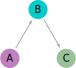
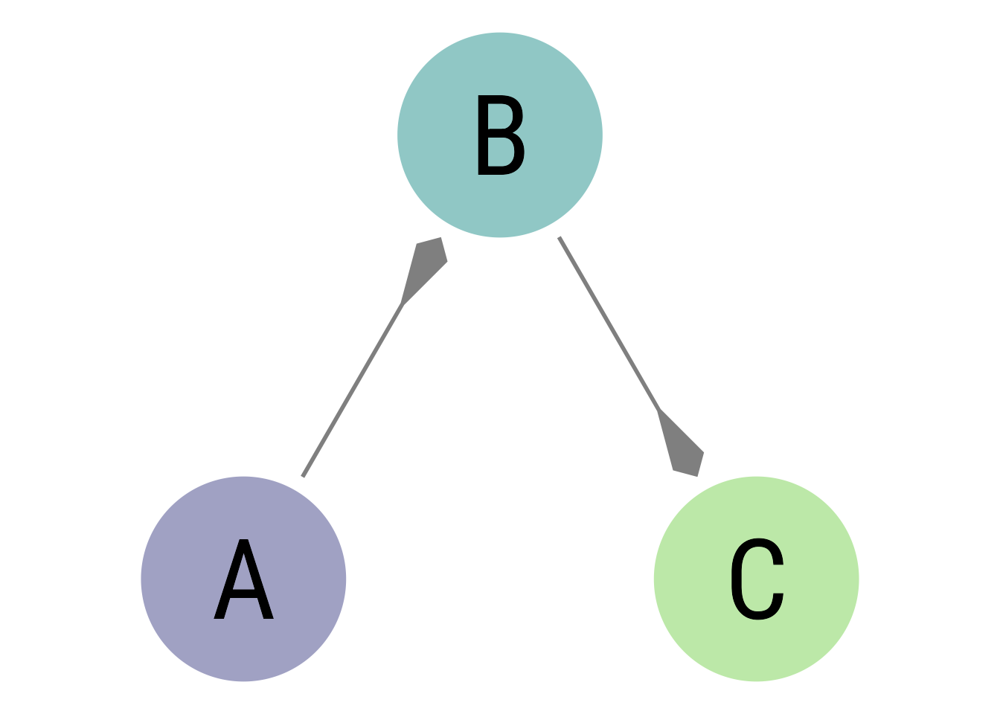

The default arrows in ggplot2 are perfectly serviceable. There is the open variety:
Open arrow code
p +geom_segment(arrow =arrow())
Figure 1: The ggplot2 open arrow
You can specify which ends of the segment have arrowheads, whether the arrows are open or closed, the length of the arrow, and how sharp the arrow’s point is with the angle argument.
I happen to prefer a longer, sharper, closed arrow:
Closed arrow code
p +geom_segment(arrow =arrow(angle =15,length =unit(8, "mm"),type ="closed"))
\usetikzlibrary{arrows}\begin{tikzpicture}\node[fill=violet!50!white, circle] (A) at (0,0) {A};\node[fill=cyan!80!black, circle] (B) at (1,1.732) {B};\node[fill=green!40!black!40, circle] (C) at (2,0) {C};\path[->, draw, shorten >=2pt, shorten <=2pt, >=latex', thick, color = black!40, text = black] (A) -> (B);\path[->, draw, shorten >=2pt, shorten <=2pt, >=latex', thick, color = black!40, text = black] (B) -> (C);\end{tikzpicture}

Figure 3: The TikZ latex’ arrow
The ggarrow package
If you want more variety in drawing arrows in ggplot2, Teun van den Brand’s ggarrow package expands your limits to whatever your imagination can provide.
The default arrowhead is already a nice improvement:
Code for wings arrow (i.e, stealth arrow in TikZ)
p +geom_arrow_segment(length_head =10)
Figure 4: The “wings” arrow
You can play around with the sharpness of the point (offset) and the sharpness of the barb (inset). You can also add feathers.
p +geom_arrow_segment(length_head =15,arrow_head =arrow_head_wings(offset =22.5,inset =115),arrow_fins =arrow_head_wings(offset =22.5,inset =115),length_fins =15)
Figure 6: Double-headed arrow with kite arrowhead
Code for reverse kite arrowhead
p +geom_arrow_segment(length_head =20,arrow_head =arrow_head_wings(offset =45,inset =120))

Figure 7: Reverse kite arrowhead
If the arrow goes too far, you can pull it back with the resect arguments.
Code for resecting an arrowhead
p +geom_arrow_segment(length_head =6,arrow_head =arrow_head_wings(offset =120,inset =35),resect_head =2)
Figure 8: Demonstration of resecting arrowheads
There is much, much more that can be done. See ggarrow’s arrow ornament vignette for more options.
Custom Arrowheads
Not only does ggarrow offer great arrow geoms with excellent features like resection, one can create any custom arrowhead or feather that can be made with a single polygon.
The polygon generally falls between -1 and 1 on x and y, though you can plot outside those limits. In most cases, the point is at (0,1), and the line ends at (0,0):
The polygon you create should be be a 2-column matrix with named columns (e.g., x and y). Here I make a elliptical arrowhead.
Code
make_ellipse <-function(a =1, b = .5){ t <-seq(0,2*pi, length.out =361)cbind(x = a *cos(t), y = b *sin(t)) }p +geom_arrow_segment(length_head =5,arrow_head =make_ellipse())
Figure 10: Make ellipse
The arrowheadr package
I made the arrowheadr package to make custom arrowheads quickly. Some of them are admittedly silly. However, it is now easy to make my favorite kind of arrow in ggplot2:
Figure 15: Bezier curves can make almost anything.
Citation
BibTeX citation:
@misc{schneider2023,
author = {Schneider, W. Joel},
title = {Making a Custom Arrowhead for Ggplot2 Using Ggarrow and
Arrowheadr},
date = {2023-08-26},
url = {https://wjschne.github.io/posts/2023-08-26-making-a-custom-arrowhead-for-ggplot2-using-ggarrow-and-arrowheadr/},
langid = {en}
}
![]()